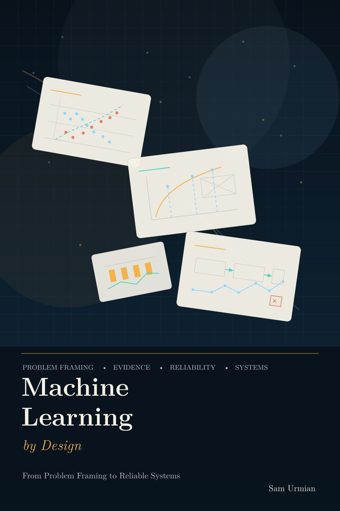

ASPIRE
On the SLATE ASPIRE project page, I am listed as a researcher on the project team working on synthetic data generation, differential privacy, and federated learning.
Open project pageResearcher at SLATE
My research develops algorithmic and machine learning foundations for trustworthy AI and data science. I study adaptive AI systems that learn from data, feedback, and human interaction, with a focus on the complexity and reliability of learning under real-world constraints.
A central theme in my work is feedback complexity: understanding what resources—data, computation, communication, verification, and interaction—are needed when a model’s outputs influence the future data it observes. This perspective connects problems in synthetic data generation, personalized recommendation, federated learning, learning-guided reasoning, automated theorem proving, and ML-assisted combinatorial optimization.
Across these projects, my goal is to design algorithms that are reliable, interpretable, privacy-preserving, personalized, and computationally efficient. On the application side, I apply these ideas to educational technology and learning analytics, especially in settings where AI systems must adapt to learners while maintaining trust, privacy, and robustness.
Currently, I am a researcher at the Centre for the Science of Learning & Technology (SLATE), working with Mohammad Khalil and Barbara Wasson. I will defend my PhD in August 2026 under the supervision of Mateus de Oliveira Oliveira on dynamic programming algorithms and automated theorem provers, at the Department of Informatics, University of Bergen. Before that, I received my master's degree from Sharif University of Technology.
I lead NOKI — the Norwegian Olympiad in Artificial Intelligence, the national initiative that selects and trains Norway's high-school team for the International Olympiad in Artificial Intelligence (IOAI).
Through NOKI we run open contests, training rounds, and mentoring sessions that introduce students to machine learning, algorithms, and scientific thinking, and we send a national team to compete with peers from around the world. If you are a student, teacher, or partner interested in getting involved, please get in touch.
Visit ioai.no
I am writing Machine Learning by Design: From Problem Framing to Reliable Systems, a concept-first machine learning book aimed at IOAI students, computer science undergraduates, instructors, and serious self-learners.
The book grows out of my research and teaching, and is being developed openly on GitHub. Drafts, the current PDF edition, and companion code are available there, and feedback and contributions are welcome.
Current
On the SLATE ASPIRE project page, I am listed as a researcher on the project team working on synthetic data generation, differential privacy, and federated learning.
Open project pageEduTrust AI focuses on trust, responsibility, privacy, and the use of artificial intelligence in education through interdisciplinary collaboration.
Open project pageAI LEARN is SLATE's national AI research centre initiative on hybrid intelligence and the interaction between humans and artificial intelligence.
Open project pagePast
Automated Theorem Proving from the Mindset of Parameterized Complexity Theory (Project no. 288761).
Open project pagePython library for generating synthetic mixed-type tabular data with diffusion in a transformed feature space.
Open repositoryAdaptive-learning recommender and ranker for selecting what a learner should work on next to make measurable progress.
Open repositoryiOS research app for discovering, following, and saving papers from public research sources.
Open repositorySolver for computing twin-width using a heuristic approach.
Open repositoryAn engine for tree-decomposition-based algorithms.
Learning Unitary Branching Programs.
Open repository